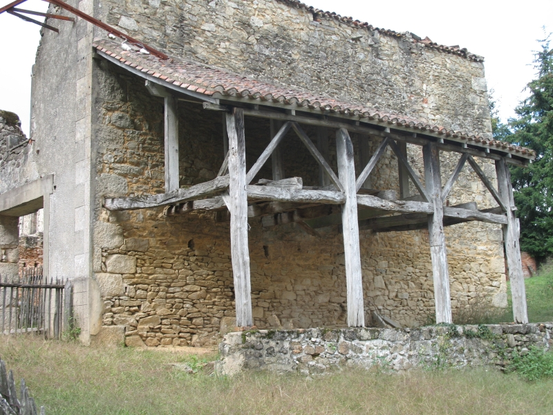

|

| File size | 1380799 |
| Original date | 9/25/06 4:53 PM |
| Resolution | 2048 x 1536 |
| Flash | Flash did not fire, auto, red-eye reduction |
| Focal length | 10.835mm |
| Exposure time | 1/100s |
| Aperture | 4.0 |
| Focus Distance | |
| Metering Mode | Multi-segment |
| Camera make | Canon |
| Camera model | Canon PowerShot A620 |
| Sensor type | OneChipColorArea |
|